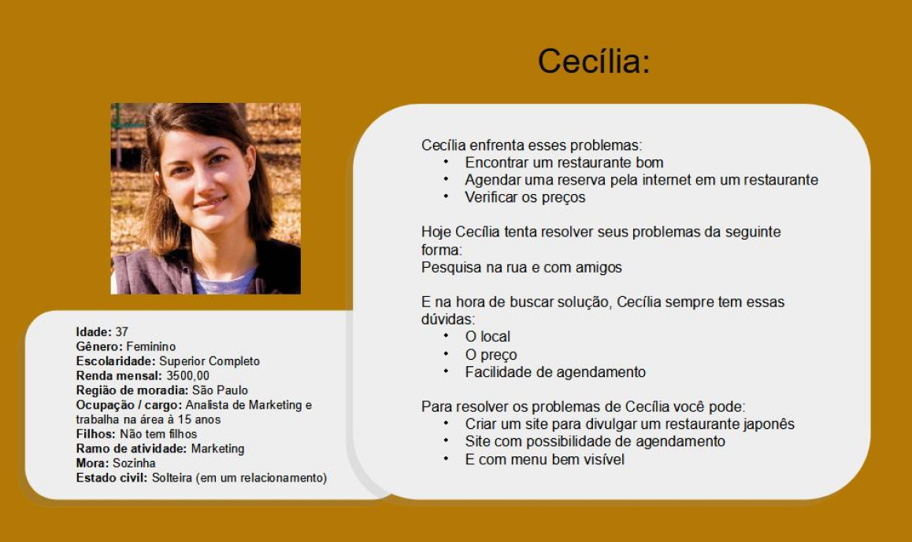
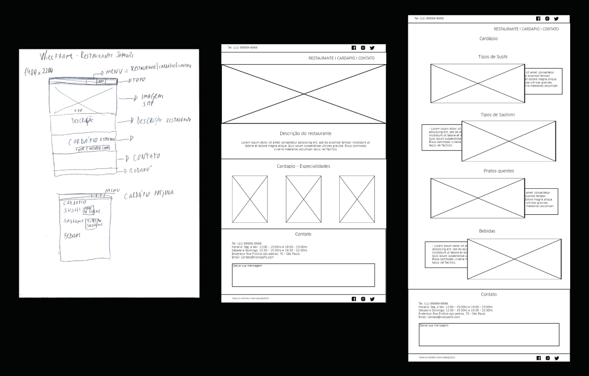
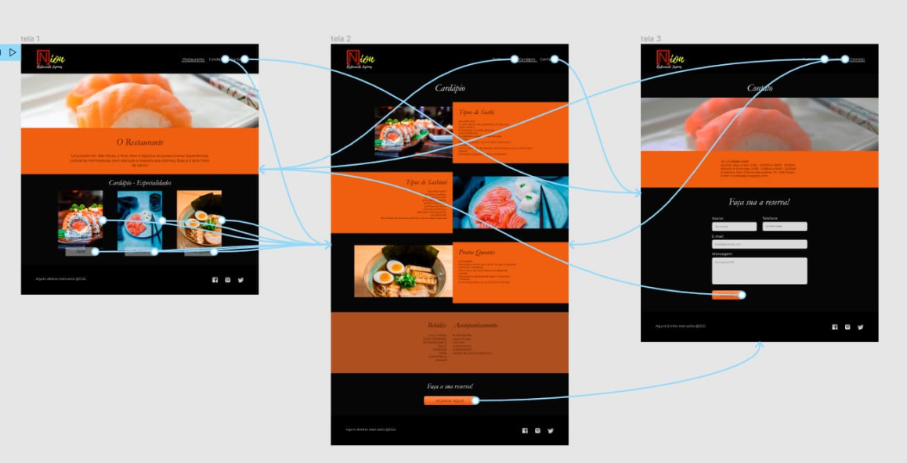
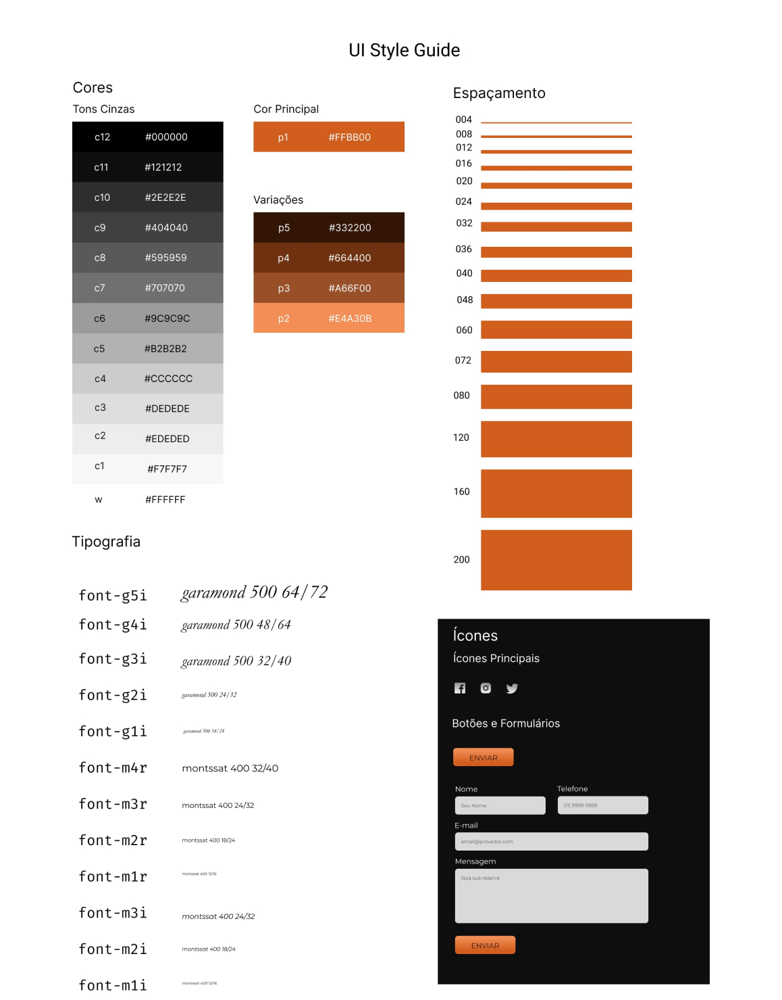

Nion - Restaurante Japonês

O Projeto
O Nion é um projeto de criação de um site fictício para um restaurante japonês, onde seu principal objetivo com a criação do site era a divulgação da marca e do contato, para que futuros clientes pudessem conhecê-los e que antigos pudessem acompanhar as mudanças no cardápio.
Público Alvo
O público-alvo são todas as pessoas interessadas em comer comida japonesa, e que possuem acesso à internet. Normalmente, casais de 30 a 60 anos, adeptos da cultura japonesa, pessoas que gostam de frutos do mar, entre outras, que estão procurando um lugar para jantar.
Os Primeiros passos
Foi feito um questionário com o cliente, para entender suas necessidades e onde ele estava pensando em chegar com esta divulgação.
Briefing
- 01. Qual o nome do site?
- Nion - Restaurante Japonês
- 02. Ramo de atuação e tempo de mercado?
- Alimentício – Restaurante Japonês. 2 anos
- 03. Produtos e/ou serviços oferecidos?
- Comida Japonesa
- 04. Principais problemas que identifica no site atual.
- Não temos um site
- 05. Por que você está criando esse site? O que você espera realizar?
- Queremos aumentar nosso alcance e vender pela internet.
- 06. O que você está oferecendo a seu público?
- Comida.
- 07. O que você quer que os usuários façam em seu site?
- Para divulgar nosso restaurante, que os usuários consigam agendar um horário no restaurante físico.
- 08. Que tipo de site ele será? (Puramente promocional? Coletor de Informações? Uma publicação? Um ponto de venda?)
- Uma porta de entrada para a empresa.
- 09. Que recursos ele terá (Sistema de publicação? Animações flash? Sistema de e-commerce? Nenhum recurso adicional? Outro sistema? Se sim, especifique.)
- Queremos uma vitrine para anunciar nosso cardápio e contatos.
- 10. Quantas páginas o site deverá ter?
- Home, Cardápio e Contato
- 11. Quais são seus 3 principais concorrentes?
- 1 - Kobu Sushi - http://www.kobu.com.br/ - 2 Restaurante Hiro - https://restaurantehiro.com.br/ - 3Nakato Restaurante Japonês - https://nakato.com.br/home
- 12. Quem é seu Público-Alvo?
- Pessoas interessadas em comer comida japonesa.
- 13. Você está imaginando uma certa aparência para o site?
- Sim, gosto muito do site da Kobu Sushi. (Ver link 01 de concorrentes)
- 14. Você tem padrões existentes, como logos e cores, que devem ser incorporados?
- Sim tenho uma Logo e deve seguir os padrões de cores
- 15. Quais são alguns outros sites da web que você gosta?
- 1 - Restaurante Hiro - https://restaurantehiro.com.br/ - 2 - Nakato Restaurante Japonês - https://nakato.com.br/home
Benchmark
Para entender melhor o que a concorrência estava fazendo, foi feito uma pesquisa de Benchmark e essa pesquisa, baseada nos sites que o cliente mostrou preferência, nos mostrou alguns pontos em comum, que podem ser usados para o desenvolvimento do site.
Story-Telling
Foi criada uma história, com base nas necessidades do cliente deste restaurante, para tentar entendê-lo melhor. Era uma vez, um casal que queria comer comida japonesa. Todos os dias eles procuravam nas ruas, informações de restaurantes que pudessem jantar no final de semana. Isso não era muito útil, pois dependiam de andar e perguntar o cardápio do cardápio, perguntar preços, para cada restaurante encontrado. Por causa disso, resolveram pesquisar na internet e encontraram um site que os informava sobre um bom restaurante, os preços eram compatíveis com seu bolso e com a possibilidade de agendamento. Desde então, eles usam o site regularmente para fazer suas reservas e conferir as atualizações no menu.
Persona
Para o desenvolvimento do produto, foi criada uma persona, que ajudou a ter uma maior atenção com o cliente.
Identificação de Stakeholders
Depois, foram identificados os stakeholders, ou seja, todos aqueles que seriam afetados pelo projeto. Consumidores do restaurante, investidores, colaboradores, o comércio vizinho, pois a divulgação do restaurante atrairá mais pessoas para a área e competidores.
O desenvolvimento do Projeto
Foi criado um site para atender as necessidades do cliente, sendo desenvolvido, a partir da análise do Briefing do cliente, do estudo da concorrência e de um levantamento do público do cliente. A princípio, nos primeiros rascunhos, com menu no topo que daria acesso para outras paginas, sendo explicado mais adiante, dando muita ênfase na praticidade do encontro das informações.
A página Inicial é composta pela descrição do restaurante, as especialidades do restaurante, que ao clicá-las você é lavado até a página de Cardápio.
Fluxo
O site se organizou desta maneira, tendo uma navegação entre as páginas por meio de um menu, localizado no topo da página. a página inicial possui uma área que leva até a área do cardápio. Na página de contato, ao enviar uma mensagem, o site é recarregado.
Cores e Tipografia
As cores foram escolhidas para combinar com o logotipo da empresa. Já a tipografia, foram escolhidas as Fontes Playlist Script, Arial e Clan Book. A razão de escolha da Playlist Script é que além de estar presente no Logotipo da marca, traz um toque oriental. Já a Clan Book, traz um ar mais limpo para o site, mais fácil de ler.
